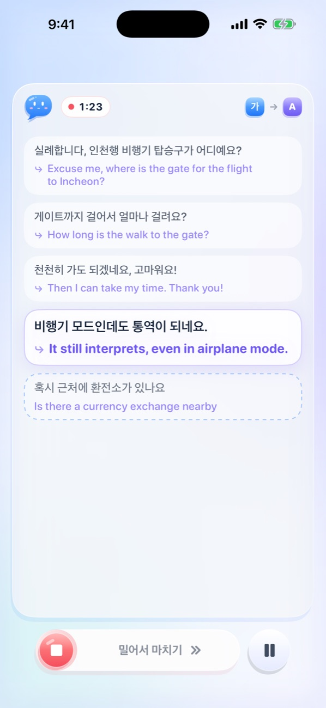
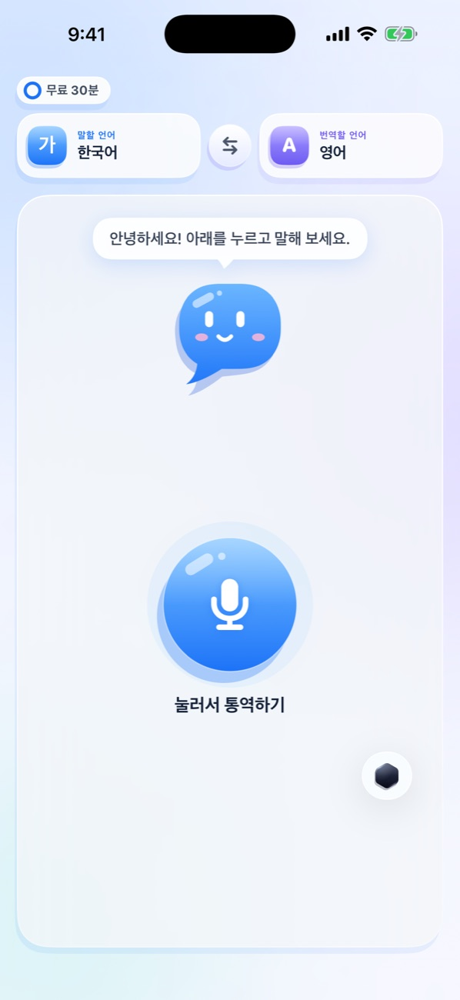
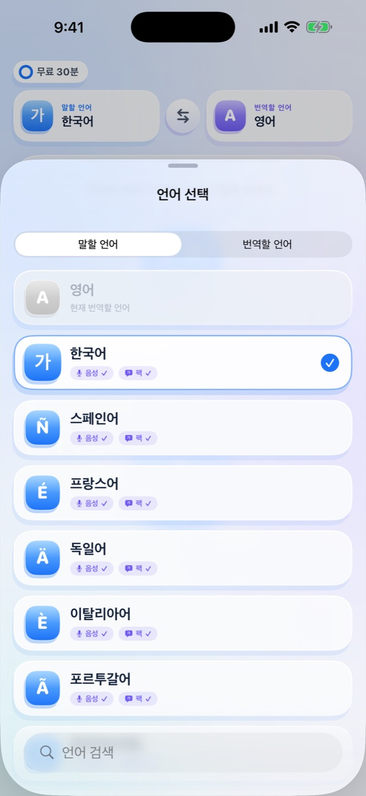
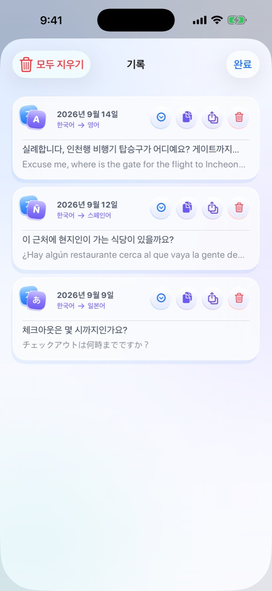
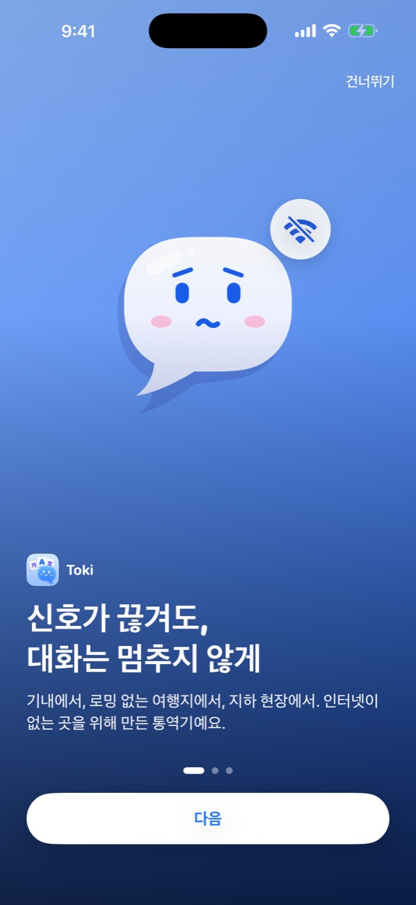

토키는 말하는 즉시 알아듣고 그 자리에서 통역하는 아이폰 통역기입니다. 음성 인식부터 번역까지 모두 아이폰 안에서 처리하므로, 와이파이도 로밍도 필요 없습니다.

번역 앱은 많지만, 정작 필요한 순간에는 인터넷이 없습니다. 토키는 바로 그 순간을 위해 만들었습니다.
비행기 모드 그대로, 옆자리 승객이나 환승 카운터 직원과 바로 대화할 수 있습니다.
유심도 로밍도 없는 첫날, 골목 식당에서도 통역은 끊기지 않습니다.
산골 마을이나 지하 공연장처럼 신호가 없는 곳에서도 인터뷰 전체가 기록되고 통역됩니다.
공장 투어나 창고 실사처럼 와이파이가 닿지 않는 현장에서도 협상을 이어갈 수 있습니다.
토키는 인터넷이 아니라 당신의 아이폰 위에서 동작하기 때문입니다.
회원가입도 복잡한 설정도 없습니다. 언어 팩을 한 번 받아두면 그 뒤로는 완전히 오프라인으로 동작합니다.
내가 말할 언어와 상대가 읽을 언어를 고르면, 필요한 음성 모델과 번역 팩을 한 번에 받아옵니다.
말하는 대로 문장이 실시간으로 나타나고, 말이 끝나기도 전에 번역이 아래로 흐릅니다.
대화가 끝나면 슬라이더를 한 번 밀면 됩니다. 원문과 번역 전체가 기록에 자동으로 저장됩니다.
토키는 Apple의 온디바이스 음성 인식과 번역 엔진 위에 만들었습니다. 서버가 없는 것이 아니라, 서버가 필요 없습니다.
언어 팩만 받아두면 비행기 모드에서도 완전한 실시간 통역이 됩니다. 로밍도 와이파이도 필요 없습니다.
문장이 끝나길 기다리지 않습니다. 아직 말하고 있는 단어까지 번역이 미리 흐릅니다.
녹음도 전송도 없습니다. 음성 인식과 번역 모두 기기 안에서 처리되고 바로 사라집니다.
말이 빨라도 순서가 꼬이지 않습니다. 확정된 문장과 번역이 한 쌍씩 대화처럼 쌓입니다.
잠시 멈췄다가 다시 말해도 세션은 계속됩니다. 끊긴 대화도 하나의 기록으로 저장됩니다.
끝난 대화는 자동으로 저장됩니다. 펼쳐 보고, 복사하고, 그대로 공유할 수 있습니다. 모두 내 폰 안에만 남습니다.
말을 다른 언어로 실어 나르는 말랑한 말풍선, 토키입니다. 표정만 봐도 지금 무엇을 하고 있는지 알 수 있습니다.
카드를 누르면 토키가 폴짝 뜁니다.
실제 앱 화면입니다. 복잡한 메뉴 없이, 누르고 말하면 바로 시작됩니다.




Apple 온디바이스 음성 인식과 번역이 모두 지원하는 언어입니다. 어떤 조합으로든 통역됩니다.
English, 한국어, 日本語, 中文(简体), Español, Français, Deutsch, Italiano, Português
재생을 누르면 실제 앱처럼 문장이 인식되고 번역이 따라붙는 과정을 보여드립니다.
아래 버튼을 누르면 대화가 시작됩니다.
토키에는 서버도, 계정도, 분석 도구도 없습니다. 네트워크는 Apple 언어 자산을 내려받을 때와 무료 사용 시간을 iCloud로 맞출 때 운영체제가 사용할 뿐이며, 번역은 완전한 오프라인으로 동작합니다.
모든 기능을 먼저 써보고, 계속 쓰고 싶을 때 Toki Pro를 구독하면 됩니다.
한국 App Store 기준 가격입니다.
다운로드는 무료이고, 처음 30분은 모든 기능을 제한 없이 써보실 수 있습니다. 무료 시간은 한 번만 제공되며, 앱을 다시 설치하거나 같은 Apple 계정(iCloud)의 새 기기로 바꿔도 초기화되지 않습니다. 계속 쓰시려면 Toki Pro를 구독하시면 됩니다. 월 2,900원 또는 연 19,000원(월 1,583원꼴, 45% 절약)이며, 설정의 Apple 계정에서 언제든 해지할 수 있습니다. 구독하지 않아도 저장한 대화는 계속 보실 수 있습니다.
네. 언어 팩(언어당 약 50~100MB)을 한 번 받아두면 음성 인식과 번역 모두 기기 안에서 처리됩니다. 비행기 모드에서 그대로 시험해 보실 수 있습니다.
iOS 26 이상이 설치된 iPhone에서 동작합니다. Apple의 최신 온디바이스 음성 인식과 번역 기술을 사용하기 때문입니다.
한국어, English, 日本語, 简体中文 4개 언어를 지원합니다. 처음에는 아이폰의 언어 설정을 따르며, 앱 설정에서 언제든 바꿀 수 있습니다. 통역 언어 9개와는 별개입니다.
앱 안에서 함께하는 말풍선 캐릭터입니다. 듣고, 통역하고, 저장할 때마다 표정과 움직임으로 지금 상태를 알려줍니다.
기록은 내 기기 안에만 저장됩니다. 개발자를 포함해 누구도 볼 수 없고, 언제든 앱에서 삭제할 수 있습니다.
Apple 번역 엔진을 사용합니다. 일상 대화, 여행, 업무 미팅 수준의 대화에 충분한 품질이며, 인터넷 기반 번역과 달리 지연이 거의 없습니다.
아니요. 오디오는 인식되는 즉시 버려지며 파일로 저장되지 않습니다. 남는 것은 원문과 번역 텍스트뿐이고, 그것도 내 폰 안에만 있습니다.